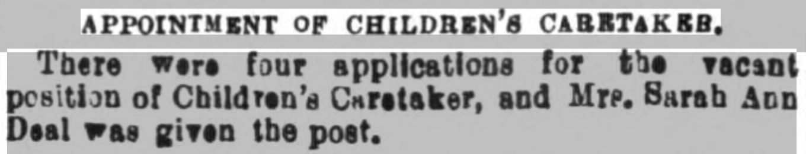
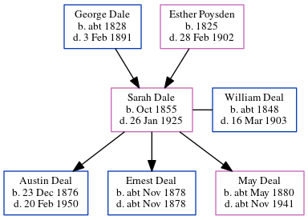

Sarah Ann Deal (née Dale) 1855 - 1925
[ Home ] | [ Calendar ] | [ Surnames Index ] | [ Errors ] | [ Family History ]A caretaker of bridge union workhouse and the child of George Dale (an agricultural labourer) and Esther Poysden (a servant), Sarah Dale, the great-great-aunt of Nigel Horne, was born in Chartham, Kent, England in Oct 18551,2,3,4,5,6,7,8, was baptised there at St Mary on 2 Dec 1855 and also married William Deal (a bailiff asylum farm with whom she had 3 children: Austin Alfred, Ernest and May) there at St Mary's Church on 11 Nov 187510.
During her life, she was living in Chartham Hatch, Kent, England on 7 Apr 186113; at 1 Dane John Grove, Canterbury, Kent in 18712; at Asylum Farm Cottages in Chartham on 3 Apr 188111; at Asylum Cottages in Chartham in 18914 and on 5 Apr 189112; at 14 Asylum Cottages in Chartham on 31 Mar 190114; and at Union Road, Bridge, Kent on 2 Apr 19116 following the death of her husband on 16 Mar 1903.
She died on 26 Jan 1925 in Chartham7,9.
Parents
- George was born c. 1828
- Esther was born in 1825
Children
- Austin Alfred was born on 23 Dec 1876
- Ernest was born c. Nov 1878
- May was born c. May 1880
Citations
- 1861 England Census Online publication - Provo, UT, USA: The Generations Network, Inc., 2005.Original data - Census Returns of England and Wales, 1861. Kew, Surrey, England: The National Archives of the UK (TNA): Public Record Office (PRO), 1861. Data imaged from the National
- 1871 England Census Online publication - Provo, UT, USA: The Generations Network, Inc., 2004.Original data - Census Returns of England and Wales, 1871. Kew, Surrey, England: The National Archives of the UK (TNA): Public Record Office (PRO), 1871. Data imaged from the National
- 1881 England Census Online publication - Provo, UT, USA: The Generations Network, Inc., 2004. 1881 British Isles Census Index provided by The Church of Jesus Christ of Latter-day Saints © Copyright 1999 Intellectual Reserve, Inc. All rights reserved. All use is subject to the
- 1891 England Census Online publication - Provo, UT, USA: The Generations Network, Inc., 2005.Original data - Census Returns of England and Wales, 1891. Kew, Surrey, England: The National Archives of the UK (TNA): Public Record Office (PRO), 1891. Data imaged from The National
- 1901 England Census Online publication - Provo, UT, USA: The Generations Network, Inc., 2005.Original data - Census Returns of England and Wales, 1901. Kew, Surrey, England: The National Archives of the UK (TNA): Public Record Office (PRO), 1901. Data imaged from the National
- 1911 England Census Online publication - Provo, UT, USA: Ancestry.com Operations, Inc., 2011.Original data - Census Returns of England and Wales, 1911. Kew, Surrey, England: The National Archives of the UK (TNA), 1911. Data imaged from the National Archives, London, England.
- England & Wales, Death Index: 1984-2005 Online publication - Provo, UT, USA: The Generations Network, Inc., 2007.Original data - General Register Office. England and Wales Civil Registration Indexes. London, England: General Register Office. © Crown copyright. Published by permission of the Cont
- England & Wales, FreeBMD Birth Index, 1837-1915 Online publication - Provo, UT, USA: The Generations Network, Inc., 2006.Original data - General Register Office. England and Wales Civil Registration Indexes. London, England: General Register Office. © Crown copyright. Published by permission of the Cont
- England & Wales, National Probate Calendar (Index of Wills and Administrations),1861-1941 Online publication - Provo, UT, USA: Ancestry.com Operations Inc, 2010.Original data - Principal Probate Registry. Calendar of the Grants of Probate and Letters of Administration made in the Probate Registries of the High Court of Justice in England. Londo
- England Marriages 1538-1973 - Findmypast
- 1881 England, Wales & Scotland Census - Findmypast (was age 25 and the wife of the head of the household)
- 1891 England, Wales & Scotland Census - Findmypast (was age 55 and the wife of the head of the household)
- 1861 England, Wales & Scotland Census - Findmypast (was age 5 and the daughter of the head of the household)
- 1901 England, Wales & Scotland Census - Findmypast (was age 45 and the wife of the head of the household)
Media
Canterbury Journal, Kentish Times 25 March 1905

England & Wales births 1837-2006 Transcription - BMD-B-1855-4-CJ-000203-041
1861 England, Wales & Scotland Census Transcription - GBC-1861-0003417885
England & Wales marriages 1837-2008 Transcription - BMD-M-1875-4-AZ-000078-251
England Marriages 1538-1973 Transcription - R_848405020-2
Kent, Canterbury Archdeaconry marriages 1538-1928 - GBPRS/CANT/M/97244480/2
England & Wales deaths 1837-2007 - BMD/D/1925/1/AZ/000257/079
England Marriages 1538-1973 - R_848404650/2
England Births & Baptisms 1538-1975 - R_885423731
England Births & Baptisms 1538-1975 - R_938199570
Kent Baptisms - GBPRS/CANT/B/96193184
1901 England, Wales & Scotland Census - GBC/1901/0005460908
Family Tree
Map
Generated by ged2site. Last updated on Jul 3, 2024
Known Issues
May have been living with mother on 7 Apr 1861, but the addresses don't match or aren't detailed enough to be sure
May have been living with father on 7 Apr 1861, but the addresses don't match or aren't detailed enough to be sure
1871: Not living with either parent in childhood when aged 15